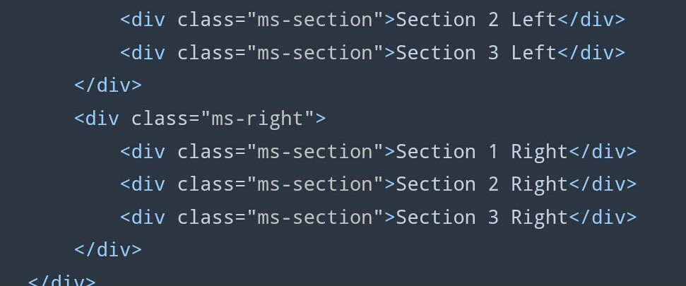
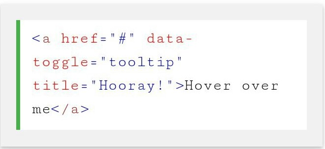
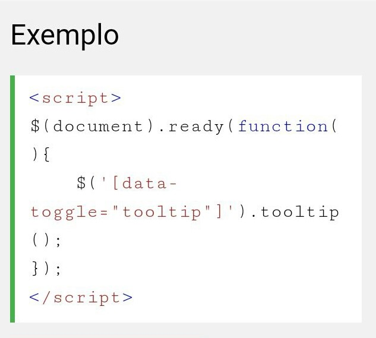
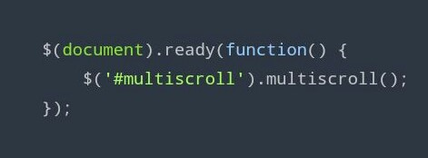

Tooltip :
Esse plug-in é uma pequena caixa pop-up que aparece quando o usuário move o ponteiro do mouse sobre um elemento.
Nota: As dicas de ferramentas devem ser inicalizadas com jQuery: selecone o elemento especificado e chame o tooltip ( ) método. O códgo a segur atvará todas as dcas de ferramentas do documento :
MultiScroll :
Pluign jQuery para criar sites de multi-rolagem com dos layouts de divisão vertical
SuperScrollOrama :
AlertiFy:
O AlertifyJS é uma estrutura de javascript para o desenvolvimento de diálogos e notificações de navegadores.
Toolbar :
*Como usar. *Vantagens. *Desvantagens.
.jpg)
Fancy input :
Scrollpath :
Stellar.js :
Knob.js :
Icheck :
Cool Kitten:
PointPoint:


As configurações que temos são : efeito - Aqui você escreve o nome do efeito que deseja usar. delayScale - Aqui você pode definir o fator de atraso aplicado a cada caractere. Atraso - Use essa opção para definir o atraso entre cada caractere. sync - Selecione se você deseja que todos os personagens sejam animados ao mesmo tempo. O padrão é falso.
Para criar uma dica de ferramenta, adicione o data- toggle="tooltip" atributo a um elemento. Use o title atributo para especificar o texto que deve ser exibido dentro da dica de ferramenta :


Para inicializar o plug-in, tudo o que é preciso fazer é incluir os arquvos JS e CSS necessários e chamar o plug-in dentro de uma $(document). ready função usando o seletor que será usado como um wrapper.
*Parallax *Inumeras animações *Js Puro *JQuery *http://johnpolacek.github.io/superscrollorama/
*Bastante Simples
*Css e JS
*Responsivo
*Rico em recursos
*No seu site vem com três temas prontos para o uso: (AlertifyJS, Semantic e Bootstrap)
*https://github.com/MohammadYounes/alertifyjs
.jpg)

*Como usar. *Vantagens. *Desvantagens.
*Como usar. *Vantagens. *Desvantagens.
*1 >> Baixar: Stellar (Parallax Background) e o Jquery minimizado (Jquery.min.js) Como usar: *2>> Na sua página *3>>linkar os arquivos com a página html (jquery.min.js) (stellar.js)
*1>> Baixar o Jquery Knob Demo Como usar: *2>> Na sua página *3>>linkar os arquivos com a página html (jquery.min.js) (knob.min.js)
http://icheck.fronteed.com/ *Site auto explicativo *Usando em inputs- checkbox e radio
http://github.com/jalxob/cool-kitten * Slide * Parallax * Grid Site Exemplar : http:/www.jqueryscript.net/demo/jQuery-Responsive-Parallax-Scrolling-Fremework-Cool-Kitten/
Como funciona :
Vamos mergulhar direto no código - ele chega a cerca de 100 linhas (com comentários),
então não é difícil de seguir.
jquery.pointpoint.js

O snippet acima adiciona uma seta ao lado do cursor do mouse, que aponta para o elemento com um id de "pushButton " . Os argumentos no segundo exemplo definirão uma classe personalizada na seta (caso você queira personalizar o estilo) e a afastará ainda mais do cursor do mouse. Os estilos padrão da seta são definidos em jquery.pointpoint.css .